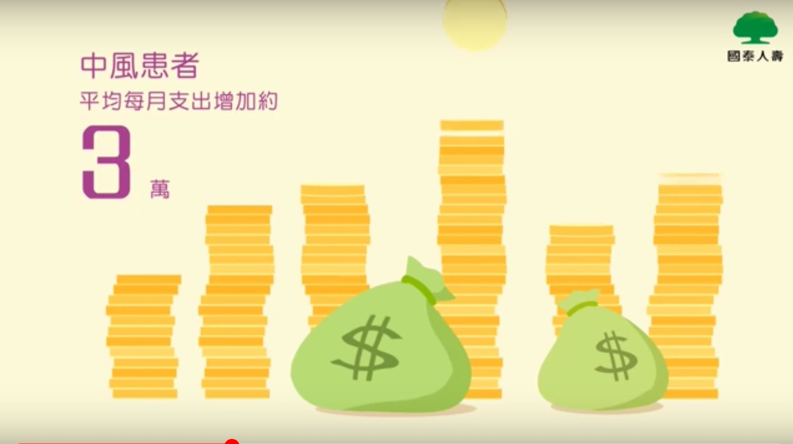

根據衛生署長期照2016年需要長期照顧的人口有67萬，
有41萬人為65歲以上的長者，占失能人口61.9%。值得一提的是，
需要長期照顧者有38.81人不是老人，顯示年輕人。
國泰人壽以影片宣傳，疼惜心愛的家人，
為自己也為家人準備幸福的依靠。
國泰與你一起同在
「讓我照顧你」-長期照顧訪談影片宣傳預告

被照顧者長照平均7.3年，一年花費30萬元，大約花費220萬
1.為未來做準備，鞏固好人生的下半場，維持長期照顧最佳保險。2.保障需要他人長期照顧時，有保險金的照顧，免陷入無錢無人照顧的悲歌。 如現在日本人對中下階級的老人，稱為下流老人，表示這樣的階級薪資是無法安逸度日， 持續下去老後崩壞，讓人警惕要提早規劃保障才能安享晚年。